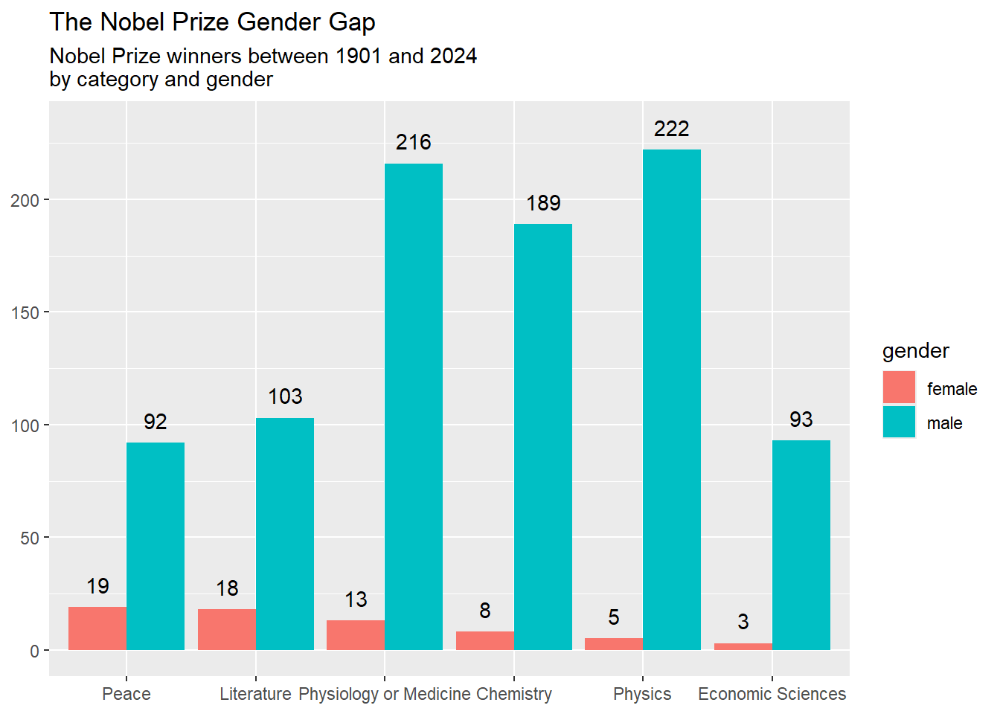

The at-home exercises should be completed using Posit cloud, Home Exercise 5. Create a new .Rmd file (use File -> New File -> R Markdown.
I advise saving the new file straight away. Because you’ll submit this file as an assignment, use a standardised name: lastname_firstname5. Regularly re-save the file.
When you have finished the exercise (or part of it), ‘knit’ the file. Export the .Rmd and the html as a .zip file, and upload this to the assignment area.
Task
You’ve been asked to make a chart to accompany an article about the Nobel Prize awards and laureates. You leave it until the last minute and shamelessly recreate a chart you found here.
library(tidyverse)prizes_df <-read_csv('prize_df.csv')laureates_df <-read_csv('laureates_df.csv')plot_df <- laureates_df |>select(gender, prize_id) |>left_join(prizes_df, by ='prize_id') |>filter(!is.na(gender)) |>group_by(gender, category) |>summarise(n =n()) reorder_by_female = plot_df |>filter(gender =='female') |>arrange(desc(n)) |>pull(category)plot_df <- plot_df |>mutate(category =factor(category, levels = reorder_by_female))plot_df |>ggplot(aes(x = category, y = n, fill = gender)) +geom_col(position ='dodge') +geom_text(aes(x = category, y = n +10, label = n), position =position_dodge(0.9)) +labs(title ="The Nobel Prize Gender Gap",subtitle ="Nobel Prize winners between 1901 and 2024\nby category and gender",x =NULL, y =NULL)

The editor gets back to you and says it’s great (phew!), but requests that you make the chart more accessible, particularly for those with vision impairments, but generally just easier to read in a small online format.
Start by saving the image and uploading to a CVD simulator Do you think the colour combination would be difficult to distinguish for any types of CVD?
Copy and paste the code for the chart into a new cell and make adjustments.
Choose a better palette of fill colours using scale_fill_.
Make adjustments to the bars so they are easier to distinguish from the background.
Adjust the theme to make elements easier to read: for example the font size and face, the contrast between the panel background, the rotation of the axis text.
Write an alt text description, following the guidelines on the previous page.
When you’re done, upload again to the colour blind checker to confirm this version meets the requirements.
In the Markdown document, write a very short description of your changes and why they improve accessibility.
The data and code are already made for you in ‘Home Exercise 7’ on Posit cloud.